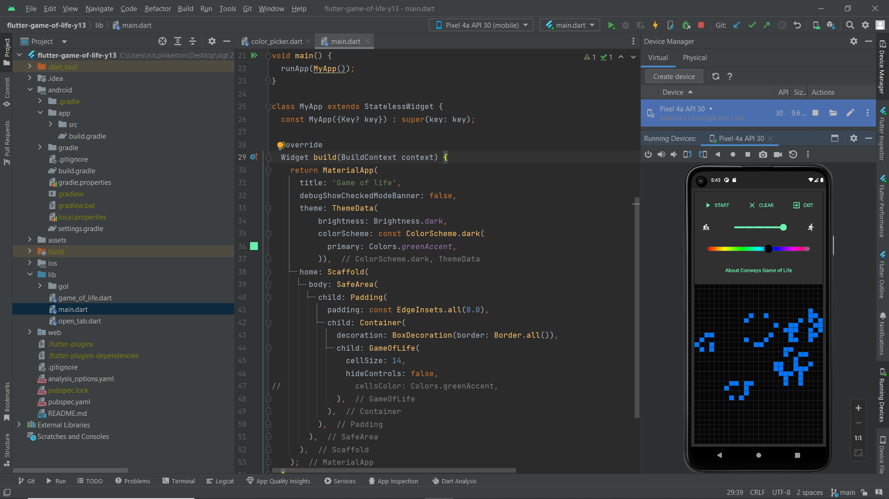

About My App
I chose to make an updated app of a program that we were given in class, Conway’s game of life. Conway’s game of life is a cellular automation, a program where you have a grid of squares (cells) that can either be "alive" or "dead". Conway’s game of life is a zero-player game, meaning as the game progresses in a series of generations, the screen displays cells, determined by a set of rules based on the of its neighbours (rules below). These rules determine whether a cell remains alive, dies, or becomes alive, creating complex patterns that can evolve over time.